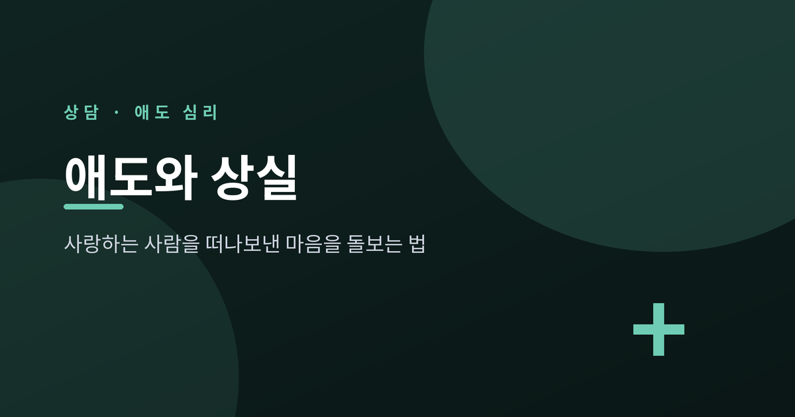
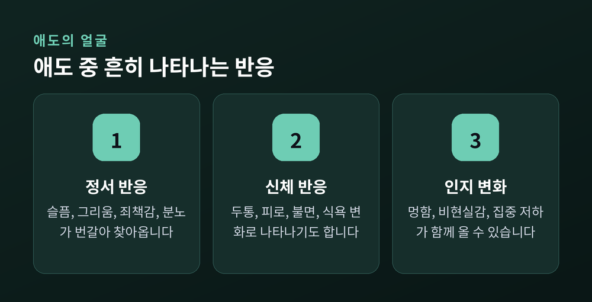
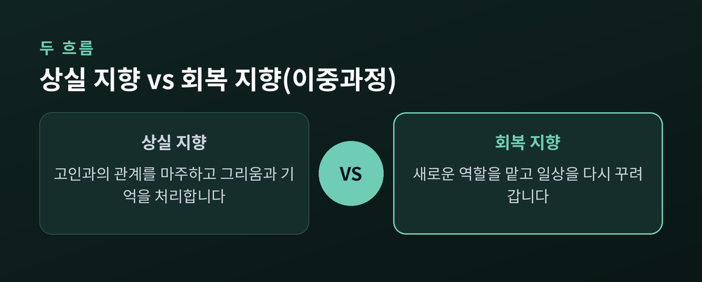
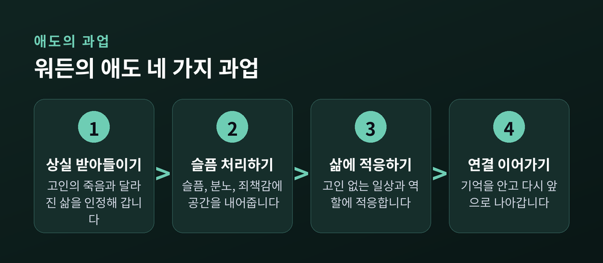
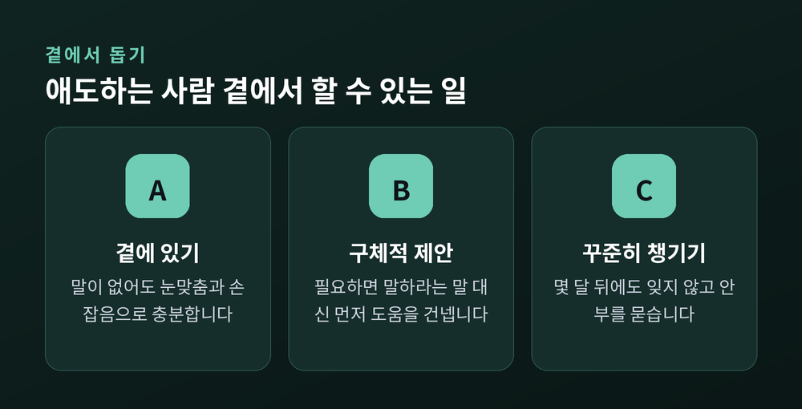

퀴블러-로스부터 지속성 비애장애까지, 애도를 이해하는 법

오늘은 애도와 상실을 어떻게 이해하고 돌봐야 하는지 이야기해 보려 합니다. 사별 이후의 감정을 낡은 통념으로만 바라보면 스스로를 더 몰아세우기 쉽습니다. 이 글에서는 애도에 관한 심리학 이론들과, 정상적인 애도와 전문적 도움이 필요한 상태를 구분하는 기준을 정리해 보겠습니다.
두 단어는 자주 섞여 쓰이지만 가리키는 대상이 다릅니다.
사별은 누군가를 죽음으로 잃은 객관적 상태이자 그 이후의 시기를 뜻합니다. 반면 애도는 그 상실에 대한 내적이고 주관적인 반응입니다. 슬픔, 그리움, 죄책감, 분노 같은 감정과 신체 반응, 생각의 변화를 모두 포함합니다.
사별이 죽음이라는 사실 자체를 가리킨다면, 애도는 그 사실을 마주하며 겪는 훨씬 길고 개인적인 과정인 셈입니다. 애도 행위(mourning)는 그 슬픔을 장례 절차나 추모 의식처럼 겉으로 표현하는 방식을 가리키는 말로 쓰이기도 합니다.
이 구분이 중요한 이유는 하나입니다. 사별의 기간은 어느 정도 특정할 수 있지만, 애도는 사람마다 속도와 형태가 다르게 이어지기 때문입니다. "언제쯤 괜찮아지냐"는 질문에 정해진 답이 없는 이유이기도 합니다.
애도를 이야기할 때 가장 많이 인용되는 것이 정신과 의사 엘리자베스 퀴블러-로스의 5단계 모델입니다. 부정, 분노, 협상, 우울, 수용의 다섯 단계로 구성되며, 1969년 저서 『죽음과 죽어감』에서 처음 제시됐습니다.
다만 이 모델은 원래 말기 환자 본인이 자신의 죽음을 받아들이는 과정을 관찰해 정리한 것입니다. 이후 대중적으로는 사별을 겪은 이들의 애도 과정에도 폭넓게 적용되어 왔습니다.
가장 널리 퍼진 오해는 이 다섯 단계를 정해진 순서대로, 모든 사람이 빠짐없이 겪는다고 생각하는 것입니다. 퀴블러-로스 본인도 1974년 저서에서 이렇게 밝힌 바 있습니다. "내 환자들 대부분은 두세 단계를 동시에 겪었고, 그 순서도 항상 같지 않았다." 말년에는 자신의 이론이 오해받은 것을 아쉬워했다고 전해집니다.
어떤 사람은 다섯 단계 중 일부만 겪거나 전혀 겪지 않기도 합니다. 현대 애도 연구자들은 이 모델을 감정에 이름을 붙이는 참고 지점 정도로 보되, 다음에 무엇이 올지 예측하는 도구로는 보지 않습니다. "수용"을 종착점처럼 그리는 서술도 비판받습니다. 애도에 종결이나 완료 같은 결승선이 있다는 기대를 심어줄 수 있기 때문입니다.

퀴블러-로스 이후 나온 이론들은 애도를 고정된 단계가 아니라 움직이는 과정으로 봅니다.
먼저 심리학자 마가렛 스트로브와 헹크 슈트가 제안한 이중 과정 모델입니다. 이 모델은 애도 중인 사람이 두 가지 대처 사이를 오간다고 설명합니다. 하나는 상실 지향으로, 고인과의 관계를 마주하고 그리움을 처리하는 것입니다. 옛 사진을 꺼내 보거나, 기억을 되새기는 일이 여기에 속합니다. 다른 하나는 회복 지향으로, 고인 없는 일상에 적응하는 것입니다. 새로운 역할을 맡고 생활을 다시 꾸려가는 과정입니다.
건강한 애도는 이 둘 사이를 추처럼 오가는 데 있다고 이 모델은 말합니다. 한쪽에만 오래 머물면 문제가 됩니다. 상실 지향에만 갇히면 기력이 소진되고, 회복 지향에만 머물면 상실 자체를 회피하게 될 수 있습니다.
또 하나 주목할 이론은 지속적 유대입니다. 심리학자 데니스 클래스, 필리스 실버맨, 스티븐 니크먼이 1996년 제시한 개념입니다. 예전에는 애도를 잘 마쳤다는 것을 고인과의 정서적 유대를 끊어내는 것으로 보는 시각이 강했습니다. 지속적 유대 이론은 이를 뒤집습니다. 관계는 죽음으로 끝나는 것이 아니라 형태가 바뀔 뿐이라는 것입니다.
고인에게 말을 걸거나, 유품을 간직하거나, 기일과 생일을 챙기거나, 고인의 가치관을 이어받아 살아가는 일 모두 지속적 유대의 자연스러운 형태로 이해됩니다. 관계를 놓아버려야 애도가 끝난다는 통념과는 다른 결입니다.

심리학자 J. 윌리엄 워든은 애도를 감정 단계가 아니라 애도 중인 사람이 능동적으로 수행해 나가는 과업으로 설명합니다. 정해진 순서나 종착점을 강요하지 않는다는 점이 특징입니다. 과업들은 겹치기도 하고 되풀이되기도 하며, 사람마다 각자의 속도로 오갑니다.
첫째는 상실의 현실을 받아들이는 것입니다. 고인이 죽었고 삶이 달라졌음을 인정해 나가는 과정으로, 초기에는 충격과 비현실감 때문에 쉽지 않습니다.
둘째는 슬픔의 고통을 처리하는 것입니다. 슬픔, 분노, 죄책감, 외로움, 때로는 무감각까지 다양한 감정이 올라옵니다. 이 감정을 피하지 않고 공간을 내어주는 과정입니다.
셋째는 고인 없는 삶에 적응하는 것입니다. 고인이 맡던 역할과 일을 새로 익히는 외적 적응, 그리고 스스로의 정체성을 다시 세우는 내적 적응이 함께 필요합니다.
넷째는 지속적인 연결을 찾아가며 앞으로 나아가는 것입니다. 애도가 삶을 지배하는 사건이 아니라 삶의 일부로 자리 잡는 지점입니다. 상실은 여전히 사실이지만, 사랑도 여전히 남습니다. 앞으로 나아간다는 것은 고인을 두고 가는 일이 아니라, 그 기억을 새로운 방식으로 함께 데려가는 일이라고 워든은 설명합니다.

애도는 시간이 지나며 강도가 서서히 줄고, 일상 기능을 되찾아가는 흐름을 보이는 것이 일반적입니다. 슬픔, 그리움, 죄책감, 분노 같은 정서 반응과 두통, 피로, 불면, 식욕 변화 같은 신체 반응 모두 애도 초기에 흔히 나타날 수 있는 것들입니다.
문제는 이런 반응이 시간이 지나도 가라앉지 않고 기능 손상을 계속 일으킬 때입니다. 이런 상태를 가리켜 지속성 비애장애(prolonged grief disorder)라 부르며, 2022년 개정된 DSM-5-TR과 세계보건기구의 ICD-11 모두 독립된 진단으로 포함하고 있습니다. DSM-5-TR에서는 우울장애가 아니라 외상 및 스트레스 관련 장애로 분류합니다.
DSM-5-TR 기준으로는 사별 후 최소 12개월(아동·청소년은 6개월)이 지났음에도, 고인에 대한 지속적이고 만연한 그리움이나 몰두가 있고, 그 밖의 부수 증상(극심한 정서적 고통, 죽음에 대한 강한 비현실감, 고인을 떠올리게 하는 것에 대한 회피, 정체성 손상 등) 가운데 여러 개가 사회적·직업적 기능에 유의미한 손상을 줄 때 고려됩니다. ICD-11은 사별 후 최소 6개월을 기준으로 더 단순한 방식으로 접근합니다.
지속성 비애장애를 겪는 사람의 비율은 연구마다 편차가 큽니다. 미국정신의학회는 사별을 겪은 성인의 7~10퍼센트 정도로 추정하지만, 조사 방법에 따라 5퍼센트에서 20퍼센트 안팎까지 다양하게 보고되며, 사고나 자살처럼 갑작스럽고 외상적인 죽음을 겪은 경우에는 그 비율이 훨씬 높게 나타나기도 합니다. 정확한 단일 수치보다는, 애도가 예상보다 훨씬 오래, 훨씬 강하게 삶을 짓누를 수도 있다는 사실 자체를 기억해두시길 권합니다.
여성, 고령, 배우자나 자녀와의 사별, 죽음 이전 고인에 대한 높은 의존도, 부족한 사회적 지지, 갑작스럽거나 외상적인 죽음, 경제적 어려움 등은 지속성 비애장애의 위험을 높이는 요인으로 반복해 보고됩니다.
다음과 같은 신호가 이어진다면 전문적인 도움을 구하시길 권합니다.
애도를 겪는 사람 곁에 있는 이들이 할 수 있는 일도 분명히 있습니다.
가장 큰 도움은 그저 곁에 있어주는 것입니다. 위로할 말이 떠오르지 않는다면 눈을 맞추거나 손을 잡는 것만으로도 충분할 수 있습니다. 고인에 대해 언급하는 것을 피할 필요는 없습니다. 형식적인 위로의 말보다, 고인이 그립다는 진심 어린 한마디가 더 깊이 가닿을 때가 많습니다.
"다 뜻이 있어서 그런 거야" 같은 상투적인 말은 삼가는 편이 낫습니다. 상대의 신념 체계와 다를 수 있기 때문입니다. 대신 "필요하면 말해"보다는 "이건 내가 도와줄게"처럼 구체적으로 먼저 제안하는 편이 실질적인 도움이 됩니다.
사별 직후 몇 주보다, 오히려 몇 달이 지난 뒤 주변의 관심이 줄어드는 시점에 더 힘든 시기가 찾아오곤 합니다. 애도 중인 사람은 스스로 먼저 연락하기 어려운 경우가 많으니, 시간이 지난 뒤에도 먼저 안부를 챙기시길 권합니다. 말하고 싶어 하지 않는다면 침묵도 지지의 한 형태로 받아들이고 곁을 지키면 됩니다.

정리하면 이렇습니다. 애도는 정해진 단계를 순서대로 밟아가는 여정이 아니라, 상실을 마주하는 시간과 일상을 회복하는 시간 사이를 오가며 각자의 속도로 걸어가는 과정입니다.
"애도의 끝은 잊는 것이 아니라, 잃은 사람을 다른 방식으로 곁에 두는 것입니다."
지금 그 시간을 지나고 계신 분이라면, 조급해하지 않으셔도 됩니다. 다만 그 무게가 감당하기 버거워진다면, 혼자 짊어지지 마시고 전문가의 손을 빌리시길 바랍니다.